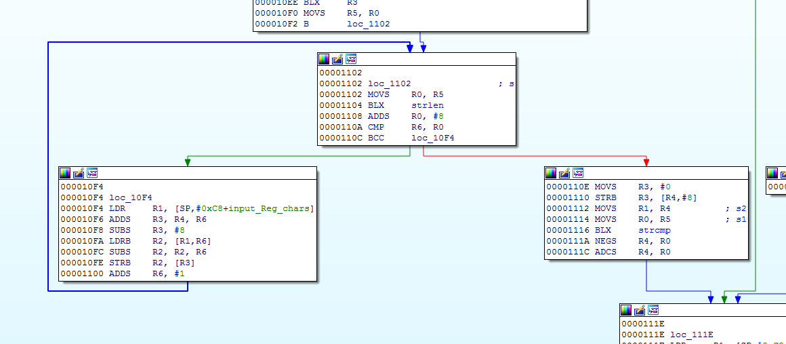
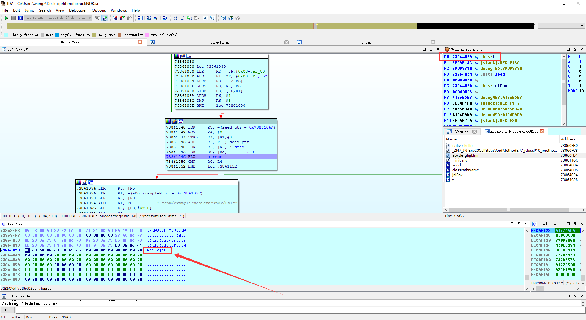

Author：wnagzihxain
Mail：tudouboom@163.com
一道比较简单的题目
JEB里可以看出，调用了一个so，把输入的字符串传进so里的一个函数进行验证，验证成功弹出输入的字符串，相当于字符串就是Flag
使用IDA载入so，发现有JNI_OnLoad()，猜测有动态注册，跟入
找到动态注册的函数表

每个Item有三个数据下面的hello()函数并没有什么实际意义，重点是上面这个abcdefghijklmn()
.data:7386400C off_7386400C DCD aTestflag ; DATA XREF: JNI_OnLoad+68o
.data:7386400C ; .text:off_73861258o
.data:7386400C ; "testFlag"
.data:73864010 DCD aLjavaLangStr_0 ; "(Ljava/lang/String;)Z"
.data:73864014 DCD abcdefghijklmn+1
.data:73864018 DCD aHello ; "hello"
.data:7386401C DCD aLjavaLangStr_1 ; "()Ljava/lang/String;"
.data:73864020 DCD native_hello+1
明确这里是动态注册后，双击abcdefghijklmn()过去修改函数名为Java_com_testFlag()
首先对长度进行判断，长度必须0x10，也就是16字节
.text:73861022 BLX strlen
.text:73861026 MOVS R4, #0
.text:73861028 CMP R0, #0x10
.text:7386102A BEQ loc_7386102E
在判断完长度后，如果长度为0x10，进入第一个循环计算，此时R6相当于计数器，起始为0，到8结束，也就是循环八次，R2为传入字符串的首地址，然后计算出结果存储在s2里
.text:73861030
.text:73861030 loc_73861030
.text:73861030 LDR R2, [SP,#8]
.text:73861032 ADD R1, SP, #20 ; s2
.text:73861034 LDRB R3, [R2,R6]
.text:73861036 SUBS R3, R3, R6
.text:73861038 STRB R3, [R6,R1]
.text:7386103A ADDS R6, #1
.text:7386103C CMP R6, #8
.text:7386103E BNE loc_73861
总结就是
for (int i = 0; i < 8; i++)
{
s2[i] = input[i] - i;
}
计算完前8字节的数据后，获取seed字符串进行对比
.text:73861040 LDR R3, =(seed_ptr - 0x7386104A)
.text:73861042 MOVS R4, #0
.text:73861044 STRB R4, [R1,#8]
.text:73861046 ADD R3, PC ; seed_ptr
.text:73861048 LDR R3, [R3] ; seed
.text:7386104A LDR R0, [R3] ; s1
.text:7386104C BLX strcmp
.text:73861050 CMP R0, R4
.text:73861052 BNE loc_7386111E
seed字符串的定义
.data:00004004 A5 28 00 00 seed DCD aQflmnFh ; DATA XREF: Java_com_testFlag+64o
.data:00004004 ; __init_my+Co ...
.data:00004004 ; "QflMn`fH"
第一部分对比成功，进入第二部分的对比，先获取Java层的一个Class
.text:00001054 LDR R0, [R5]
.text:00001056 LDR R1, =(aComExampleMobi - 0x105E)
.text:00001058 LDR R3, [R0]
.text:0000105A ADD R1, PC ; "com/example/mobicrackndk/Calc"
.text:0000105C LDR R3, [R3,#JNINativeInterface.FindClass]
.text:0000105E BLX R3
.text:00001060 STR R0, [SP,#0xC8+jclass_Calc]
.text:00001062 CMP R0, R4
.text:00001064 BNE loc_1070
获取类Calc的方法calcKey()的MethodID
.text:00001070
.text:00001070 loc_1070
.text:00001070 LDR R0, [R5]
.text:00001072 LDR R2, =(aCalckey - 0x1080)
.text:00001074 LDR R3, =(aV - 0x1084)
.text:00001076 LDR R4, [R0]
.text:00001078 MOVS R1, #JNINativeInterface.GetStaticMethodID
.text:0000107C ADD R2, PC ; "calcKey"
.text:0000107E LDR R4, [R4,R1]
.text:00001080 ADD R3, PC ; "()V"
.text:00001082 LDR R1, [SP,#0xC8+jclass_Calc]
.text:00001084 BLX R4
.text:00001086 SUBS R2, R0, #0
.text:00001088 BNE loc_109E
获取类Calc的方法calcKey()的字段key的FieldID
.text:0000109E
.text:0000109E loc_109E
.text:0000109E LDR R0, [R5]
.text:000010A0 LDR R1, [SP,#0xC8+jclass_Calc]
.text:000010A2 BL _ZN7_JNIEnv20CallStaticVoidMethodEP7_jclassP10_jmethodIDz ; _JNIEnv::CallStaticVoidMethod(_jclass *,_jmethodID *,...)
.text:000010A6 LDR R0, [R7]
.text:000010A8 LDR R2, =(aKey - 0x10B6)
.text:000010AA LDR R3, =(aLjavaLangStrin - 0x10B8)
.text:000010AC MOVS R1, #JNINativeInterface.GetStaticFieldID
.text:000010B0 LDR R4, [R0,R1]
.text:000010B2 ADD R2, PC ; "key"
.text:000010B4 ADD R3, PC ; "Ljava/lang/String;"
.text:000010B6 MOVS R0, R7
.text:000010B8 LDR R1, [SP,#0xC8+jclass_Calc]
.text:000010BA BLX R4
.text:000010BC SUBS R4, R0, #0
.text:000010BE BNE loc_10CE
通过FieldID获取Field，并将Java的String类型数据转为C语言的char字符串数组
.text:000010CE
.text:000010CE loc_10CE
.text:000010CE LDR R2, [R7]
.text:000010D0 MOVS R3, #JNINativeInterface.GetStaticObjectField
.text:000010D4 LDR R3, [R2,R3]
.text:000010D6 LDR R1, [SP,#0xC8+jclass_Calc]
.text:000010D8 MOVS R2, R4
.text:000010DA MOVS R0, R7
.text:000010DC BLX R3
.text:000010DE MOVS R1, R0
.text:000010E0 LDR R0, [R5]
.text:000010E2 MOVS R2, #JNINativeInterface.GetStringUTFChars
.text:000010E6 LDR R3, [R0]
.text:000010E8 ADD R4, SP, #0xC8+s3
.text:000010EA LDR R3, [R3,R2]
.text:000010EC MOVS R2, #0
.text:000010EE BLX R3
.text:000010F0 MOVS R5, R0
.text:000010F2 B loc_1102
进入第二部分的计算循环，计算规则和第一部分一样

还原一下
for (int i = 8; i < 16; i++)
{
s3[i - 8] = input[i] - i;
}
将两部分进行对比
.text:0000110E MOVS R3, #0
.text:00001110 STRB R3, [R4,#8]
.text:00001112 MOVS R1, R4 ; s2
.text:00001114 MOVS R0, R5 ; s1
.text:00001116 BLX strcmp
.text:0000111A NEGS R4, R0
.text:0000111C ADCS R4, R0
总结整个对比过程：将输入的16字节字符串进行处理，然后使用两个8字节字符串与处理过后的输入数据进行对比
写个小程序来处理一下
#include <stdio.h>
#include <cstring>
#include <iostream>
using namespace std;
int main()
{
char temp1[17] = "QflMn`fH,ZHVW^7c";
for(int i = 0; i < 16; i++)
{
printf("%c", temp1[i] + i);
}
printf("\n");
return 0;
}
输出
QgnPrelO4cRackEr
把这串字符串输入CrackMe进入验证，弹出Wrong Flag
纳尼？？？？？？
再回过头来分析，可能是JNI_OnLoad()里有什么函数对字符串进行了修改，刚才分析并没有注意到
可惜除了注册函数之外并没有其余调用函数的操作，那么现在就只可能在.init_array段了
找到.init_array段，果然在这里调用了__init_my()函数
.init_array:00003E78 ; ===========================================================================
.init_array:00003E78
.init_array:00003E78 ; Segment type: Pure data
.init_array:00003E78 AREA .init_array, DATA
.init_array:00003E78 ; ORG 0x3E78
.init_array:00003E78 6D 11 00 00 DCD __init_my+1
.init_array:00003E7C 00 00 00 00 ALIGN 0x10
.init_array:00003E7C ; .init_array ends
.init_array:00003E7C
跟入__init_my()

将seed字符串循环减3
根据这个我们最终还原
#include <stdio.h>
#include <cstring>
#include <iostream>
using namespace std;
int main()
{
char temp[17] = "QflMn`fH,ZHVW^7c";
for(int i = 0; i < 16; i++)
{
if(i < 8)
temp[i] -= 3;
printf("%c", temp[i] + i);
}
return 0;
}
Flag是：NdkMobiL4cRackEr
其实动态调试一下马上就看到结果了
./as
adb forward tcp:23946 tcp:23946
在这个地方下断点，此时对比的数据就是最终计算出的数据

没有反调试什么的，直接IDA attach上去
有一点要注意的是要输入任意16字节数据，不然第一个长度校验过不了
跑起来后，输入数据，断在这里数据窗口跟随R0，可以看到我们需要的数据

和阿里某一年的挑战赛试题很像，有兴趣的同学可以找一找